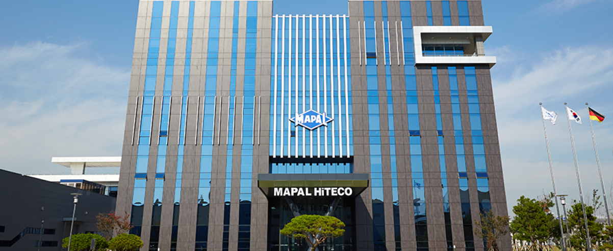

채용공고 제목이 들어가는 곳입니다.채용공고 제목이 들어가는 곳입니다.채용공고 제목이 들어가는 곳입니다.

세기정공은 1996년에 설립된 기어절삭공구 전문 제작업체다. 인천 남동공단 소재다. 정밀한 기어 형성, 절단 및 제조하는 데 사용되는 특수 기기용 호브(Hob), 피니언커터(Pinion Cutter), 스페셜툴 등을 제조한다. 업계 톱티어(Top-Tier) 슈퍼강소기업으로 알려진 곳이다. 현대차와 공동으로 8단 자동변속기용 공구, 헬리칼 홉(Helical Hob) 등을 개발키도 했다.
주요 고객사로는 국내에 현대차를 비롯해 두산, 현대 엘리베이터, 만도, 효성, 현대위아 등이 있다. 해외 고객사로는 보쉬, K카와사키, 볼보, 덴소재팬 등이 있다.
마팔하이테코는 1991년 창립된 하이테코 상사로부터 출발했다. 유럽 선진기술로 제작된 절삭공구 및 관련기기를 자동차와 중공업, 항공, 전자, 조선과 같은 국내외 주요 산업분야에 도입, 공급한 곳이다. 마팔사에서 생산한 절삭공구 수입판매 법인을 맡았다. 2000년에는 성원특수공구를 자회사로 인수해 제조분야에 진출했다. 2001년에는 독일 마팔사와 기술 및 자본을 공유하는 합작을 하기도 했다.
마팔하이테코 자회사로는 하이테코(2011년에 설립된 툴 매니지먼트 서비스), 엔엘티(2005년에 설립된 자동차 부품 가공 전문기업), 탬즈(2016년에 설립된 엔진 생산 전문기업)가 있다.
IB 업계 관계자는 "마팔하이테코는 고도화중인 변속기 시스템에 필요한 고성능과 효율성을 처리 할 수 있는 정밀 엔지니어링, 고품질 절단 기어에 대한 수요 증가에 선제적으로 대비하고 기존 사업과 시너지 모색이 가능한 포트폴리오 확장을 위해 세기정공의 자동차 기어절삭공구 사업 인수에 나선 것으로 안다"고 말했다.